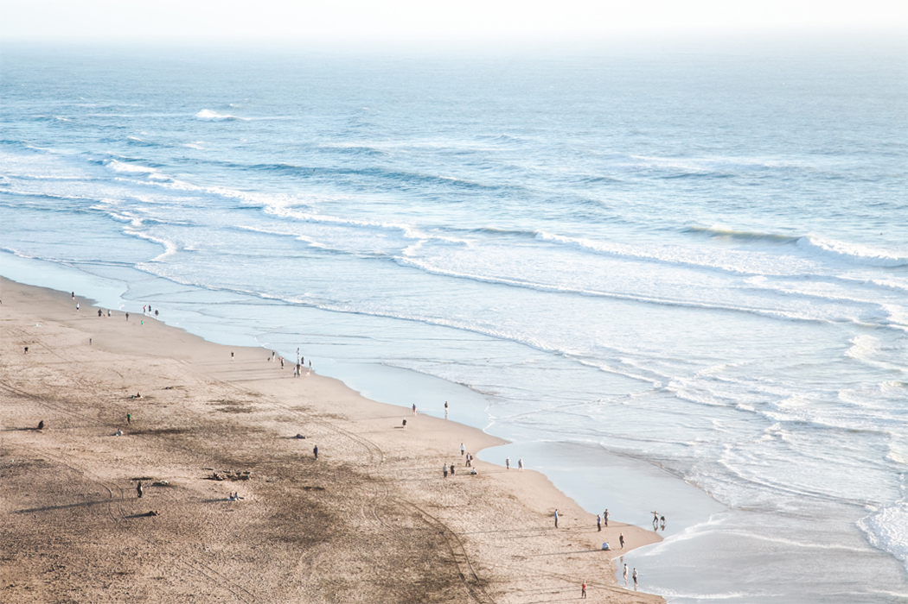
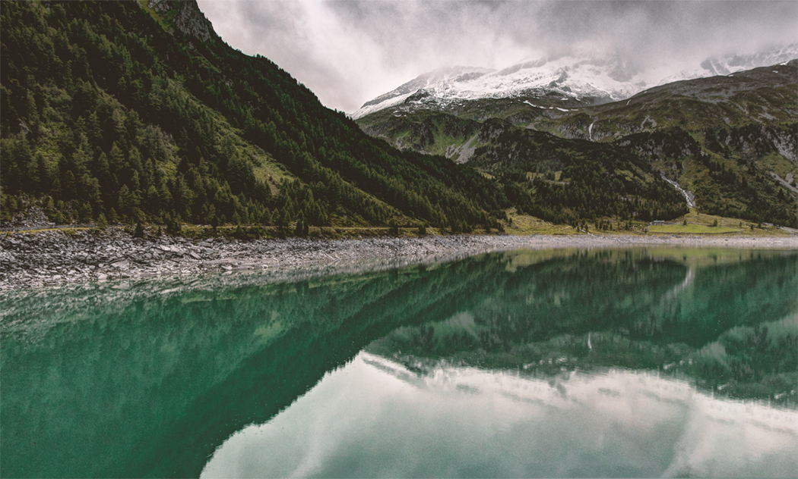
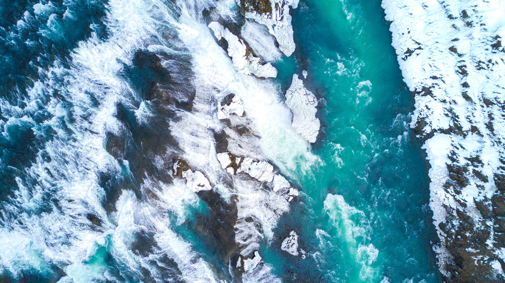
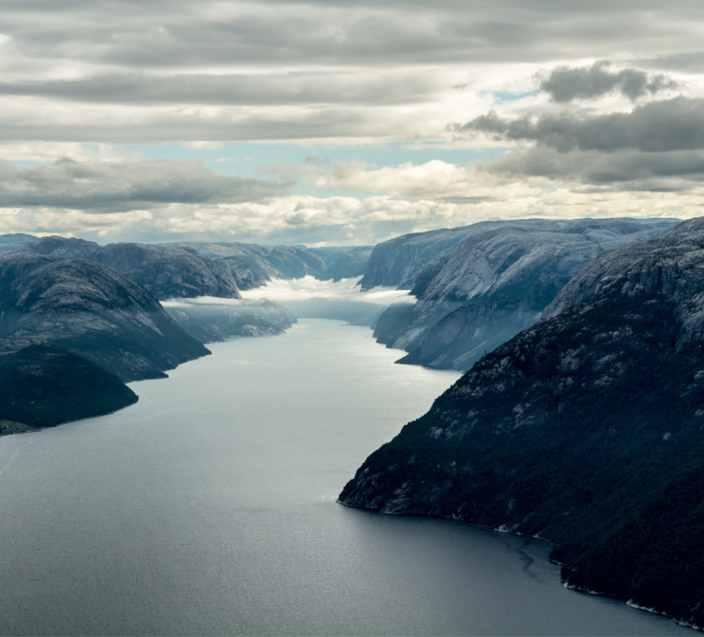
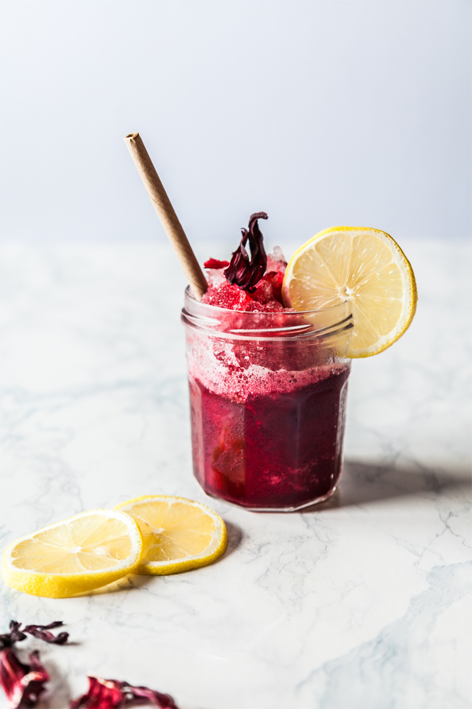

About
Koya-san — home to esoteric Buddhism — is the name of a sacred basin eight hundred meters high and surrounded by eight mountains. It is roughly one hundred kilometers of trails north from the Kumano Hongu Taisha shrine in Wakayama, Japan. Though the name of the basin is often incorrectly translated as Mt. Koya in English, Mt. Koya is only one of the eight peaks, and is remote from the central cluster of temples.
We walked towards Koya-san, but we did not touch Mt. Koya.
Photos





Subscribe
You can subscribe to my channel